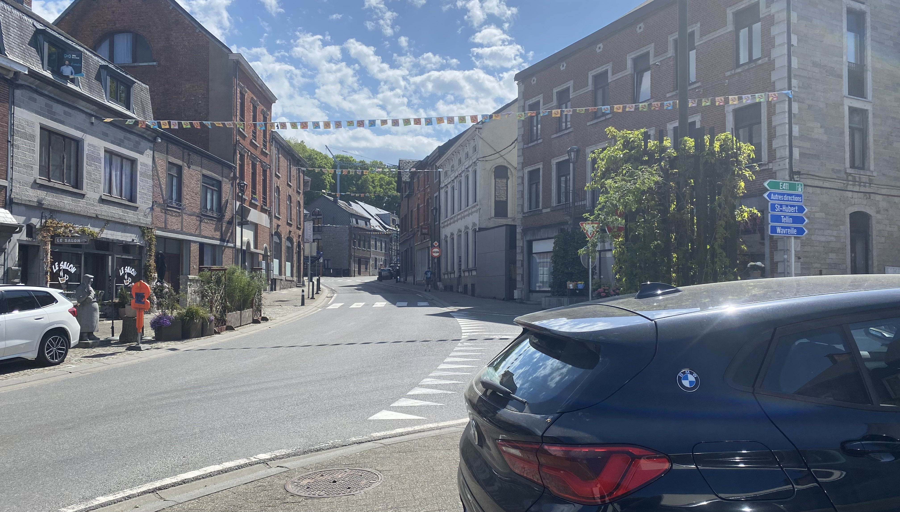
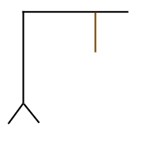
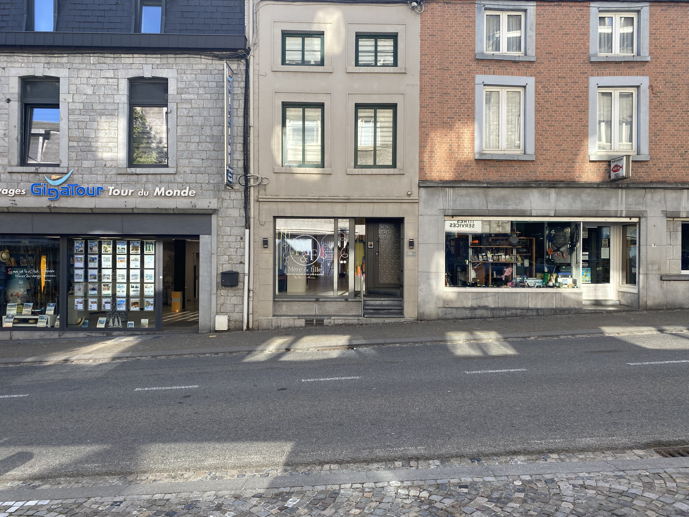
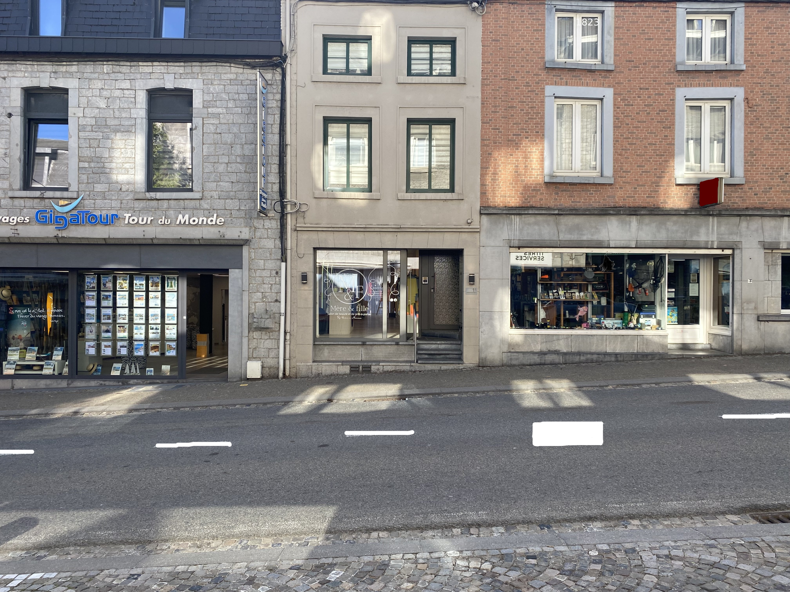
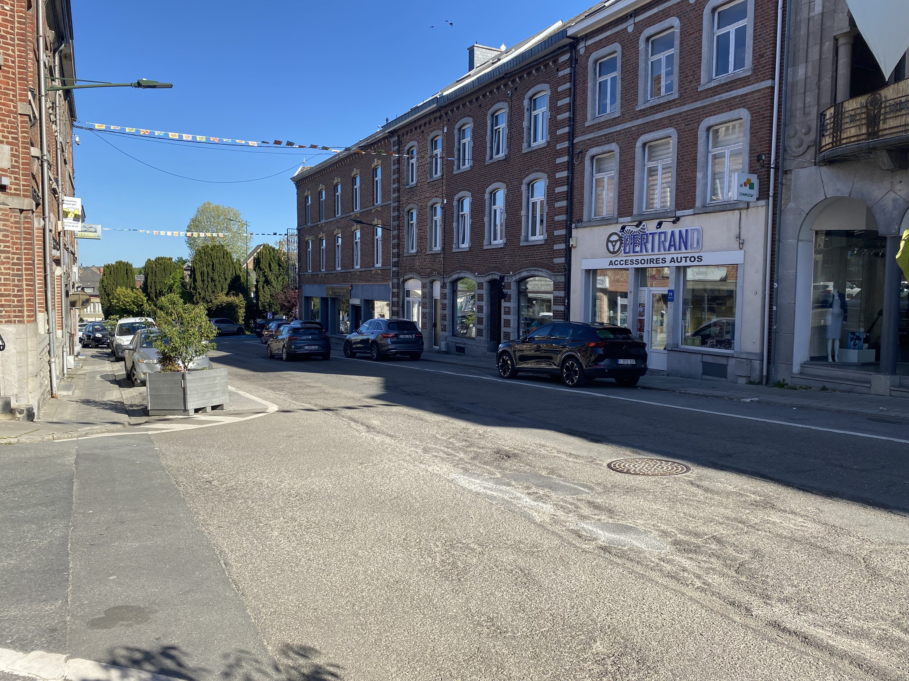

En cliquant ci-dessous, vous acceptez de défier le Comte.
Vous avez 110 minutes avant l'aube.
Attention : Chaque erreur vous coûte 1 minute de vie.

Observez bien les environs. Sur quelle route sommes-nous ?




Identifiez l'entité cachée.
Le Comte vous observe. Une seule de ces affirmations sur les anciens condamnés est vraie. Choisissez bien, une erreur vous coûtera de précieuses minutes...
Quel était le poids exact (en kg) de la grille en fer forgé du cachot principal ? Vous devez deviner à 1kg près. Chaque erreur attire les molosses...
Trouvez le mot de passe pour desceller la pierre. Chaque mauvaise lettre vous rapproche de la fin...
Une ancienne légende affirme que les créatures de Rochefort craignent l'eau de la Lomme plus que la lumière du soleil. Est-ce VRAI ou FAUX ?
Reconstituez ce fragment de parchemin trouvé dans les ruines pour repousser la malédiction :
"Seul le versé avant l' pourra rendormir le dans sa crypte."
Le Comte a brisé le mot de passe. Trouvez les paires maudites pour révéler les lettres brouillées, puis reconstituez le mot !